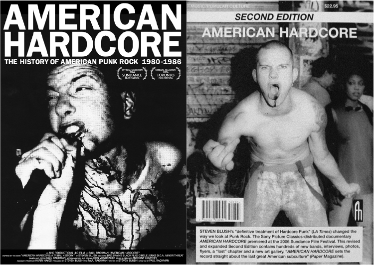

SOURCE: Siasat Partikelir
WORDS: Adjust Purwatama
American Hardcore: The History of American Punk Rock 1980 – 1986 adalah sebuah film dokumenter karya sutradara Paul Rachman yang diangkat dari buku berjudul American Hardcore: A Tribal History yang ditulis oleh Steven Blush. Bukunya sendiri diterbitkan di tahun 2006, tepatnya pada tanggal 26 September, sementara untuk DVD filmnya, dirilis beberapa bulan kemudian yaitu pada 20 Februari 2007 Oleh Sony Pictures Home Entertainment.

Seperti kebanyakan film dokumenter, sesi wawancara dengan para narasumber tersohor pun tak dilewatkan begitu saja dari karya ini. Mereka adalah para suhu musik hardcore yang namanya telah dikenal luas seantero jagat bumi. Hardcore sendiri dijelaskan pada film ini muncul ke permukaan pada periode tahun 1980-an, yang mana pada awal kemunculannya band D.O.A lah yang menampilkan kata “Hardcore” untuk pertama kalinya melalui album mereka yang berjudul Hardcore ’81 yang dirilis pada 1981. Respon kreatif anak muda Amerika pada waktu itu untuk membuat musik yang lebih kasar, lebih cepat dan lebih agresif salah satu adalah karena punk rock era 1970-an yang berevolusi menjadi new wave yang sedikit banyak terdiskoneksi dengan kegelisahan remaja Amerika. Mereka butuh pelampiasan yang lebih nyata tanpa pulasan make-up, musik yang jinak dan manis, dengan fashion yang terfabrikasi.
Dalam hal kuantitas informasi, film dokumenter musik ini banyak dipenuhi dengan wawancara, rekaman konser, dan juga arsip-arsip video maupun foto dari para pelopor kancah musik punk rock di Amerika. Selama film ini berjalan hampir bisa dipastikan kalian hanya akan melihat rekaman-rekaman dari konser suatu band tak sampai satu menit, sisanya adalah sesi wawancara bernas dengan para narasumber yang notabene para pelaku veteran kancah hardcore punk Amerika. Di awal Mungkin agak sedikit mengganggu bagi kalian yang mungkin berekspektasi akan ada banyak rekaman dari penampilan band-band hardcore yang kalian kenal, tapi tak ada salahnya mencoba untuk mendengarkan cerita mereka yang penuh dengan referensi ilmu.
Plot penceritaan dari film ini cukup berkembang baik secara kronologis dan geografis, bergerak dari satu kota ke kota yang lain, dari Los Angeles ke San Francisco ke Seattle ke Austin ke Washington hingga ke Kanada. Lalu turut menghadirkan para personil dari D.O.A, Black Flag, Minor Threat, TSOL, Corrosion of Conformity, Circle Jerks, MDC, Flipper, Cro-Mags dan banyak lainnya yang bila disebutkan sangat banyak dan mereka menceritakan romantisme saat masa membangun skena, menggalakkan etos gerakan “do it yourself” yang bisa meluas hingga ke band-band yang nyaris tidak ada yang merasa bahwa mereka bisa melegenda hingga kini.
Film ini sebagian besar berfungsi sebagai gambaran nostalgia dari era keemasan ketika seluruh siklus hidup dari band-band legendaris tersebut yang kemudian diringkas dalam 1 jam lebih. Dokumenter ini menyentuh secara dalam beberapa topik serius seperti sikap straight edge, peran wanita di kancah musik, peran sayap kanan, hingga politik Amerika Serikat era Ronald Reagan. Sosok Reagan digambarkan adalah musuh bagi kaum liberal, minoritas, kaum menengah ke bawah dan hardcore. Bahkan akibat dari dampak kebencian terhadap sosok itu adalah banyak band-band hardcore yang menulis lagu tentang beliau, dan memang banyak lagu band hardcore era 1980-an yang ditujukan untuk menentang Reagan.
Jika kalian mencari analisis sosiopolitik mendalam tentang adegan punk rock, American Hardcore tidak akan menampilkan hal-hal tersebut. Fakta yang menarik yang ada dalam film ini adalah lengkapnya rekaman band-band dari semua pertunjukan mereka di era awal atau generasi pertama, walaupun tidak ditampilkan terlalu sering, mungkin sang sutradara memang sengaja untuk banyak menampilkan pembicaraan dibanding rekaman panggung. Pada akhirnya, sulit untuk menyalahkan film yang telah penuh sesak untuk memasukkan apa yang kurang. Meskipun demikian, ada sesuatu yang anehnya menghibur dalam segi pengetahuan bahwa punk rock dan hardcore masih terus bertahan dan mewabah hingga saat ini. Silahkan isi waktu luang dan ganti kebosanan kalian dengan nutrisi dari film dokumenter ini.